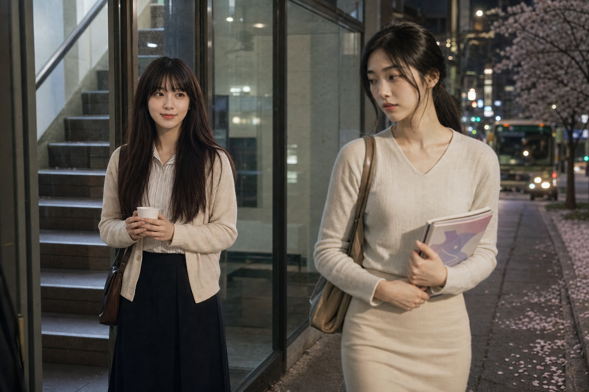

038. 학원 앞, 겹친 시간
화요일 저녁.
수원 일본어 학원 유리문 너머로 낯익은 차가 먼저 보였다.
용식은 계단을 내려오다 멈췄다. 학원 복도에는 수업이 끝난 사람들의 발소리와 교재를 가방에 넣는 소리, 자판기에서 캔이 떨어지는 소리가 섞여 있었다. 창밖 도로에는 퇴근 차량 불빛이 길게 밀려 있었고, 유리문 너머 길가에 초연이 서 있었다.
예정보다 빨랐다.
아니, 예정 같은 건 애초에 없었다. 초연이 데려다주겠다고 말했지만, 용식은 대답을 흐렸고, 둘은 그 뒤로 그 말을 제대로 꺼내지 않았다. 그런데 초연은 와 있었다. 손에는 작은 종이컵을 들고, 어깨에는 흰색 가방을 메고, 지나가는 사람들 사이에서 누가 봐도 기다리는 사람처럼.
한서윤은 그의 옆에 섰다.
[한서윤] "왜 멈춰요?"
용식은 대답하지 않았다. 한서윤의 시선도 곧 유리문 밖으로 향했다.
초연과 눈이 마주쳤다.
초연은 웃었다. 아주 작게.
그 웃음 때문에 용식은 더 움직이지 못했다.
[한서윤] "여자친구?"
[김용식] "응."
[한서윤] "오늘 온다고 했어요?"
[김용식] "아니."
한서윤은 손에 들고 있던 교재를 가방 안으로 넣었다. 목 뒤에서 낮게 묶은 머리카락이 움직였다. 그녀는 평소처럼 차분했다. 그런데 입술 끝이 조금 굳어 있었다.
[한서윤] "그럼 내가 먼저 갈게요."
[김용식] "서윤 씨."
[한서윤] "밖에서는 모르는 사람처럼 하자면서요."
그 말은 낮았다. 주변 사람들 소리에 묻힐 정도로 낮았지만, 용식에게는 또렷했다.
[김용식] "그건..."
[한서윤] "나도 알아요. 그래서 가겠다고요."
한서윤은 유리문을 밀고 먼저 나갔다. 밖으로 나가는 순간, 얼굴이 거리의 흰 가로등 아래로 들어갔다. 그녀는 초연 쪽을 보지 않고, 그냥 지나가는 학원 사람처럼 고개만 살짝 숙였다.
초연도 따라 고개를 숙였다.
너무 자연스러웠다.
그래서 더 이상했다.

용식은 몇 초 늦게 밖으로 나왔다. 공기는 낮보다 차가웠고, 도로 가장자리에는 벚꽃잎이 먼지와 섞여 굴러다녔다. 초연은 종이컵을 손바닥 안에서 굴리고 있었다.
[김초연] "수업 끝났어?"
[김용식] "응. 언제 왔어?"
[김초연] "좀 전에."
[김용식] "연락하지."
[김초연] "놀라게 해 주려고."
말은 가벼웠다. 표정은 그만큼 가볍지 않았다.
한서윤은 횡단보도 앞에 서 있었다. 신호가 빨간불이라 아직 가지 못했다. 그녀는 뒤돌아보지 않았다. 대신 폴더폰을 꺼내 화면을 한 번 확인했다. 손가락이 자판 위에서 움직이다 멈췄다.
초연은 그쪽을 보았다.
[김초연] "저 사람이야?"
[김용식] "누구?"
[김초연] "아침에 전화 왔던 사람."
용식은 거짓말을 할 수 있었다. 다른 사람이라고 하면 됐다. 학원엔 사람이 많았다. 그런데 이미 초연은 알고 묻고 있었다. 모르는 것을 확인하려는 질문이 아니라, 아는 것을 네 입으로 말해 보라는 질문이었다.
[김용식] "응."
[김초연] "인사했어?"
[김용식] "그냥 같은 반이라서."
[김초연] "같은 반이면 인사하지."
초연은 웃으며 말했다. 그런데 종이컵 가장자리가 손가락에 눌려 조금 찌그러졌다.
용식은 한서윤 쪽으로 한 걸음 움직였다. 그 순간 한서윤도 신호가 바뀐 것을 보고 걸음을 옮겼다. 둘 사이에는 자동차 한 줄과 횡단보도 흰 선이 있었다. 한서윤은 끝내 뒤돌아보지 않았다.
초연은 그 뒷모습을 끝까지 봤다.
[김초연] "되게 차갑다."
[김용식] "원래 말이 많진 않아."
[김초연] "너한테도?"
용식은 잠깐 멈췄다.
[김용식] "수업할 땐 그냥 얘기하지."
[김초연] "밖에서는 안 하고?"
[김용식] "오해받기 싫으니까."
초연은 그 말을 듣고 고개를 끄덕였다. 납득했다는 표정은 아니었다. 말의 모양을 접어서 가방 안에 넣어 두는 사람 같았다.
[김초연] "잘했네."
그 말은 34화의 그 말과 같았다. 그런데 온도가 달랐다.
용식은 초연의 손에 들린 종이컵을 봤다.
[김용식] "그거 뭐야?"
[김초연] "코코아. 네 거."
[김용식] "식었겠다."
[김초연] "응. 네가 늦게 나와서."
용식은 종이컵을 받았다. 미지근했다. 종이컵 안쪽에서 달고 눅눅한 냄새가 올라왔다. 그는 한 모금 마시려다, 초연이 자기 입술을 보고 있는 것을 느끼고 컵을 내렸다.
[김용식] "차 어디 있어?"
[김초연] "저쪽."
둘은 나란히 걸었다. 손은 잡지 않았다. 초연은 평소보다 반 걸음 앞서 갔고, 용식은 그 간격을 좁히지 못했다. 수원역 쪽으로 가는 버스가 옆을 지나가며 바람을 밀었다. 초연의 머리카락이 볼에 붙었다 떨어졌다.
차에 타고 나서도 초연은 바로 말을 하지 않았다.
용식은 운전석에 앉아 안전벨트를 맸다. 시동을 걸었지만 출발하지 않았다. 앞유리 너머 학원 간판이 보였다. 유리문 앞에는 방금까지 있던 사람들의 그림자가 빠르게 사라지고 있었다.
[김용식] "왜 그래."
[김초연] "뭐가."
[김용식] "말이 없어서."
[김초연] "생각 좀 하느라."
[김용식] "무슨 생각."
초연은 창밖을 봤다.
[김초연] "아니야."
그 말이 끝이었다.
용식은 차를 출발시켰다. 길가 편의점 앞에서 학생들이 컵라면을 들고 서 있었고, 버스정류장에는 학원 가방을 멘 사람들이 줄지어 있었다. 너무 평범한 저녁이었다. 그래서 더 견디기 어려웠다.
초연은 집 근처까지 가는 동안 코코아 이야기도, 수업 이야기도, 주말 데이트 이야기도 꺼내지 않았다. 가끔 폴더폰을 열어 시간을 확인했고, 다시 닫았다. 딸깍, 하는 소리가 조수석에서 반복됐다.
골목에 도착하자 초연은 가방을 챙겼다.
[김용식] "내일 발표 끝나고 볼래?"
[김초연] "너 뒤풀이 있잖아."
[김용식] "잠깐이라도."
[김초연] "봐서."
그녀는 문을 열었다가 멈췄다.
[김초연] "용식아."
[김용식] "응."
[김초연] "나 오늘 온 거, 불편했어?"
용식은 바로 아니라고 말하려 했다. 그런데 초연의 얼굴을 보자 말이 걸렸다. 그녀는 답을 듣고 싶은 게 아니었다. 이미 느낀 것을 확인하고 있었다.
[김용식] "놀랐어."
[김초연] "불편한 건 아니고?"
[김용식] "아니야."
초연은 고개를 끄덕였다.
[김초연] "그래."
그녀는 내렸다.
용식은 초연이 현관 쪽으로 들어갈 때까지 기다렸다. 그녀는 한 번도 뒤돌아보지 않았다.
집으로 돌아가는 길, 폴더폰이 진동했다.
용식은 신호 대기 중 화면을 봤다. 답장을 쓰지 못했다. 뒤에서 차가 경적을 울렸다.
그는 폴더폰을 닫고 출발했다.
닫힌 화면 안쪽에서, 두 사람의 이름이 동시에 남아 있었다.